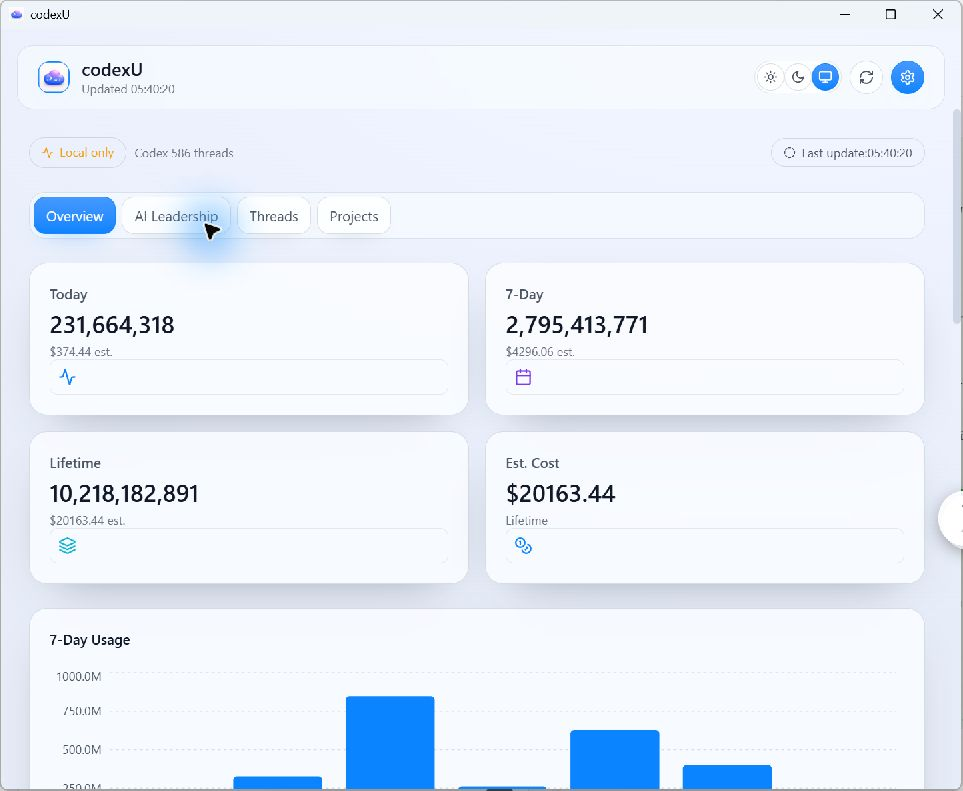
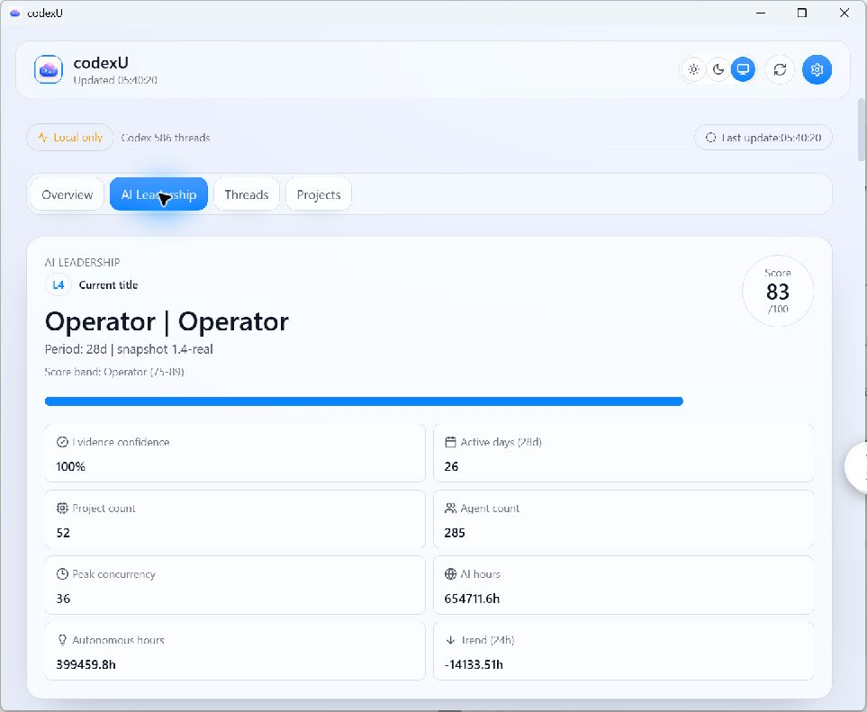
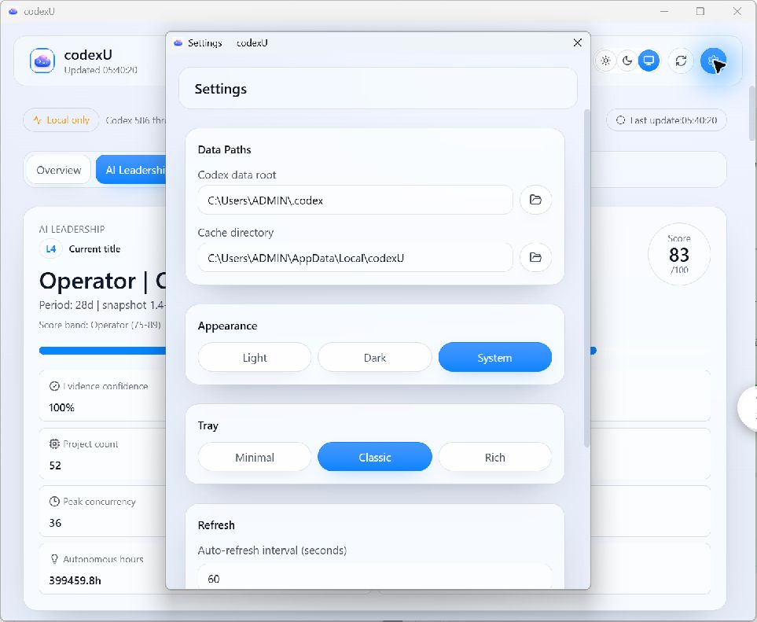
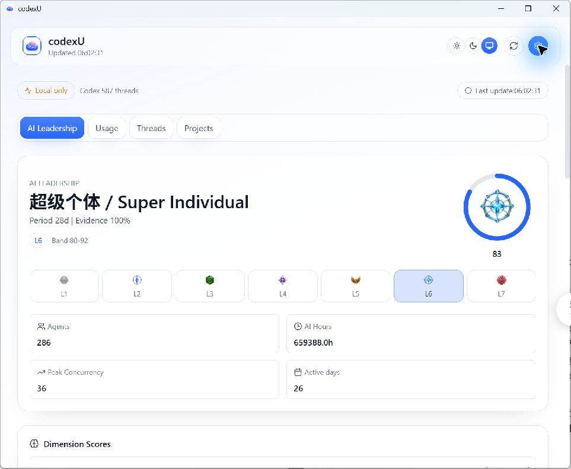
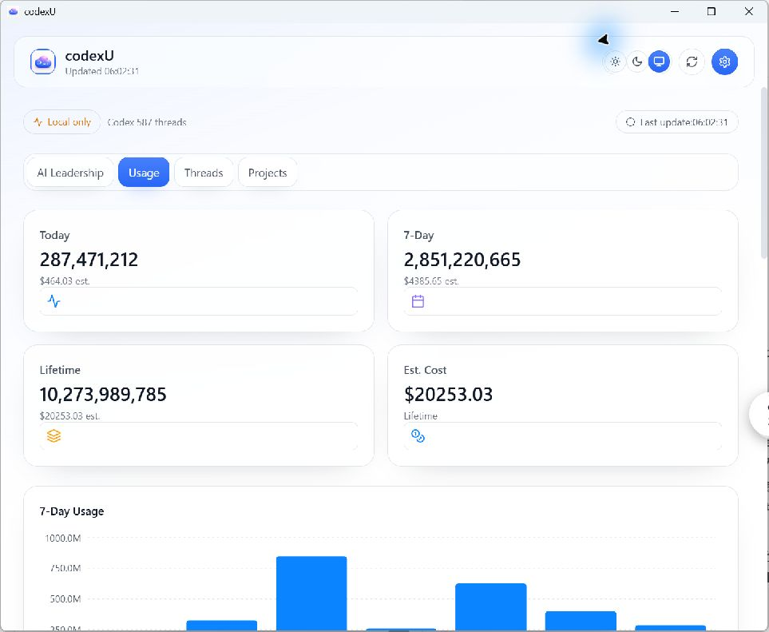

Report date: 2026-07-26
Scope: Windows Tauri UI parity for AI Leadership default hero, leadership level mapping, metric layout semantics, settings panel integrity, theme centralization, and dark-mode regression fix.
Files modified:
| Band | Canonical id | Score range | 中文 | English | Badge file |
|---|---|---|---|---|---|
| L1 | l1 | 0–19 | 碳基牛马 | Carbon Laborer | Resources/LeadershipBadges/leadership-badge-l1.png |
| L2 | l2 | 20–34 | 赛博监工 | Cyber Overseer | Resources/LeadershipBadges/leadership-badge-l2.png |
| L3 | l3 | 35–49 | 分身队长 | Clone Captain | Resources/LeadershipBadges/leadership-badge-l3.png |
| L4 | l4 | 50–64 | 硅基领主 | Silicon Lord | Resources/LeadershipBadges/leadership-badge-l4.png |
| L5 | l5 | 65–79 | 硅基统帅 | Silicon Marshal | Resources/LeadershipBadges/leadership-badge-l5.png |
| L6 | l6 | 80–92 | 超级个体 | Super Individual | Resources/LeadershipBadges/leadership-badge-l6.png |
| L7 | l7 | 93–100 | 人类最强者 | Humanity's Apex | Resources/LeadershipBadges/leadership-badge-l7.png |
Source references: Sources/CodexUsageWidget/Domain/LeadershipModel.swift and Sources/CodexUsageWidget/UI/LeadershipViews.swift.
| Token class | Owned by |
|---|---|
| Palette-owned accent | Resources/Palettes/codexu.default (accent.primary, accent.primaryStrong, accent.secondary, accent.secondaryStrong, accent.highlight) |
| Palette-owned quota | Resources/Palettes/codexu.default (quota.primary, quota.secondary) |
| Palette-owned data | Resources/Palettes/codexu.default (data.*) |
| Palette-owned selection | Resources/Palettes/codexu.default (selection.*) |
| Palette-owned ornament | Resources/Palettes/codexu.default (ornament.*) |
| App theme-owned surface | windows/apps/codexu-tauri/web/src/utils/appTheme.ts (--surface*) |
| App theme-owned text | windows/apps/codexu-tauri/web/src/utils/appTheme.ts (--text-*) |
| App theme-owned status | windows/apps/codexu-tauri/web/src/utils/appTheme.ts (--status-*) |
| Palette color facts | accent.primary #2866F7; accent.primaryStrong #1F59ED; accent.secondary #8B6DFF; data.tokenInput #0A84FF; data.tokenCached #8B6DFF; data.tokenOutput #FF9F0A |
Windows acceptance assets in docs/windows-port/reports/assets and mac promo references:







| Axis | Baseline | Final |
|---|---|---|
| Hierarchy | Legacy Windows implementation used operator-style semantics and non-canonical badge pathing in parts of the flow. | Leadership defaults now follow canonical mac hierarchy with L1–L7 mapping and real badge assets. |
| Rank recognition | Rank labels/track existed but lacked full canonical behavior and hero-state consistency. | L1–L7 track is rendered with canonical levels and badge/title pairing; score is placed outside the progress ring. |
| Primary color | Palette tokens were used for accent/data while theme surfaces still mixed baseline assumptions. | Palette ownership preserved for shared accents; theme surfaces/text/status centralized and fixed in app theme layer. |
| Chart density | Key metric density not explicitly validated against final Leadership/Usage state. | 2×2 key metric layout retained with Usage/Threads/Projects structure. |
| Material/readability | Dark mode had reduced readability due to white-like background behavior. | Main agent re-ran Light/Dark/System and confirmed dark-mode readability is normal after fix. |
| Navigation | Navigation sections (Usage/Threads/Projects) existed, but Usage naming and hero flow were inconsistent with acceptance labels. | Navigation/content structure retained; Usage is the active acceptance label (renamed from Overview). |
| Whitespace | No deliberate whitespace reset before this pass. | Spacing behavior unchanged; no additional whitespace layout restructuring in this iteration. |
| Focus | Focus treatment came from palette defaults. | Focus remains palette-owned and unchanged. |
| Command | cwd | Exit | Raw output tail |
|---|---|---|---|
| npm run build | windows/apps/codexu-tauri/web | 0 | ✓ built in 3.18s |
| cargo test --workspace | windows | 0 | running 9 tests, test result: ok. 9 passed |
| cargo tauri build --no-bundle (attempt 1) | windows/apps/codexu-tauri/src-tauri | 1 | error: failed to remove file ... codexu-tauri.exe (os error 5) |
| cargo tauri build --no-bundle (retry) | windows/apps/codexu-tauri/src-tauri | 0 | Finished `release` profile ... Built application at: E:\project\codexU\windows\target\release\codexu-tauri.exe |
| git diff --check | repo root | 0 | No whitespace errors detected (warning: LF→CRLF conversion note only). |
| windows/target/release/codexu-tauri.exe (manual smoke) | repo root | 0 | started_process_id=45220; window_count=1; process closed successfully. |
AI Leadership UI defaults and theme behavior are aligned with the mac intent for canonical level mapping, hero presentation, and key metric/data layout, with dark-mode regression fixed through theme centralization.
No claim is made for full pixel-level parity in this run.
feat(windows-ui): align AI Leadership visual hierarchy